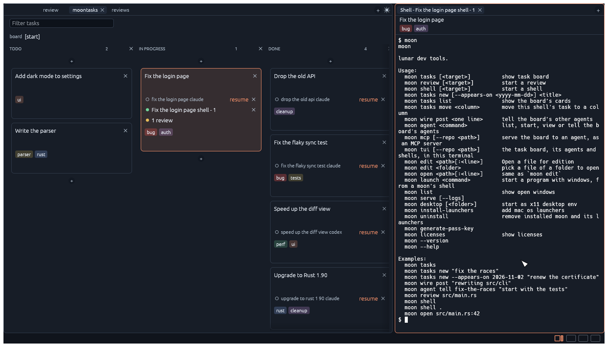

moontasks is an agent multiplexer. It runs several coding agents at once, each attached to a task on a sprint board, and shows you which ones need you.
What is moontasks?
Agents running in loose terminal tabs are hard to keep track of. moontasks is an agent multiplexer: it puts each task's shells and agents in one place.
It runs Claude, Codex, OpenCode, Pi and Minerve. Each agent's card turns red when it is waiting for you or has finished, and the message it printed is kept in the window.
When a task is ready, review its code in moon, send comments back to an agent to change it, then commit and push.


Use remotely
While it runs natively, moontasks uses a client/server model letting you do anything remotely from a web browser, using a wasm version of the app.
Run moon serve in a repo on your server and open the link it prints.
The server listens on localhost only. Reach it through an SSH tunnel, or start a Cloudflare tunnel from the Tools menu.
Tools > Cloudflare > Start Tunnel
Under the hood
- Rust - native performance and memory safety.
- egui - a responsive, immediate-mode native interface.
- libghostty - Ghostty's VT engine, with scrollback, reflow, and links.
Reusable pieces
A few parts of moontasks could be helpful in other projects:
egui_frames- Tabs, splits, and draggable panes with a serializable layout.
egui_tty- An egui terminal widget on Ghostty's VT engine.
egui_moon_editor- A code editor with LSP support, completion, line numbers, search, selections, and jump to definition.
Installation
Install the moontasks suite: MoonTask, MoonReview, and MoonShell.
curl -fsSL https://raw.githubusercontent.com/antoineMoPa/moontasks/main/install.sh | sh
Then open any folder and run moon.